2026年10月17日 東京→大阪 キャノンボール 23時間38分
週末の予定をとくに何も考えていなかった金曜日、ふと自作の天気予報を見たらこれ以上ないTO向きの天候になっていることに気づいた。
今年はキャノンボールは全くの想定外で練習や準備をしておらず6年前のOT達成時より脚力が落ちていることは間違いないものの、「これほどTOで条件が良い日は1年に1度あるかないか。やるだけやってみよう。」と土曜日に決心。
当初は日曜日の0時丁度にスタートするつもりだったが、スタート地点に少し早く到着してしまったので土曜日の23:50にスタート。
想定以上の寒暖差で体力を消耗したものの、予報通り一日中安定して東風が吹いてくれたほか、何人かの人が迎撃してくれるなどたくさんの応援があったおかげで23時間38分で梅田に到着し、双方向でキャノンボール達成。
| 時刻 | 地点 | 経過時間(h:mm) | 距離(km) |
|---|---|---|---|
| 2026年10月17日 23:50 | 東京都中央区 日本橋 | 0:00 | 0.0 |
| 2026年10月18日 03:08 | 神奈川県秦野市 セブンイレブン 秦野菖蒲東店 | 3:18 | 72.4 |
| 2026年10月18日 06:00 | 静岡県富士市 セブンイレブン 富士市中柏原店 | 6:10 | 137.6 |
| 2026年10月18日 09:06 | 静岡県島田市 セブンイレブン 島田六合店 | 9:16 | 205.2 |
| 2026年10月18日 12:00 | 静岡線浜松市 ファミリーマート 細江西気賀店 | 12:10 | 267.8 |
| 2026年10月18日 15:07 | 愛知県刈谷市 セブンイレブン 刈谷一里山町店 | 15:17 | 334.7 |
| 2026年10月18日 18:46 | 三重県亀山市 ファミリーマート 国１関宿店 | 18:56 | 413.2 |
| 2026年10月18日 21:48 | 奈良県生駒市 セブン-イレブン 生駒鹿畑町店 | 22:03 | 483.6 |
| 2026年10月18日 23:28 | 大阪府大阪市 梅田 | 23:38 | 510.8 |
計画(ルート、目標速度、天候)
基本的には6年前のOTを逆向きにしたR246、姫街道、R23、R25を通る510kmのルートとし、 一部(袋井〜磐田付近など)は前回の反省から右左折をできる限り少なくなるように改良した。
また、今回は下表のように1時間毎に目標の区間速度を設定(東京と大阪では速度が出ないことを考慮)し、3時間おきにRwGPSでPOIを置いてペースの目安となるようにした。
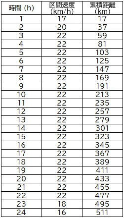
また、自作のキャノンボール専用 天候・風向き予測は大雑把にキャノンボールの風向きを見るためのツールだが、 モニグラ〜さんがもっと細かく風向き等を表示できるツール、MONIWINDを公開してくれているので、そちらで細かく風向きや気温をチェック。
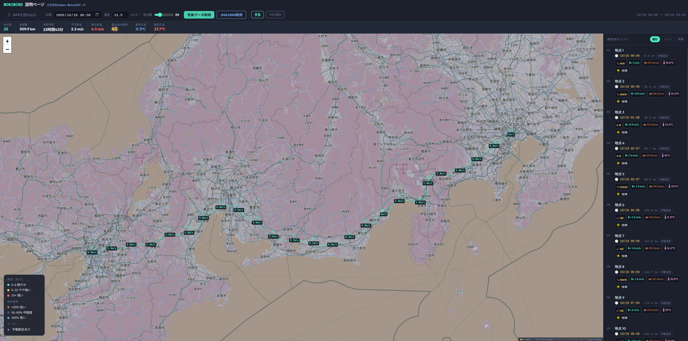
松田〜御殿場が向かい風、桑名〜四日市が横風、というだけで他のほとんどの区間で2m/sから3m/sの追い風、という絶好の条件。
スタート時刻としては17日の23時から18日の3時くらいまでが風向きが良かったが、交通量が増える前にR246を抜けて沼津まで行きたかったので0時スタートを選択。
スタートまで
土曜日(17日)の昼12時に出走を決心してXにポスト。
カロリーの高いものを食べつつ昼寝をするためにずっとベッドで横になっていたのだが、眠りにつけたのは結局1時間程度だった。
23時10分に家を出発して日本橋へ。
予想より早く23時40分頃に日本橋に到着してしまい、少し迷ったがスタートを10分早めて23時50分発にすることとした。
走行
「23時50分にスタートします」とXにポストして日本橋の道路元標を出発。
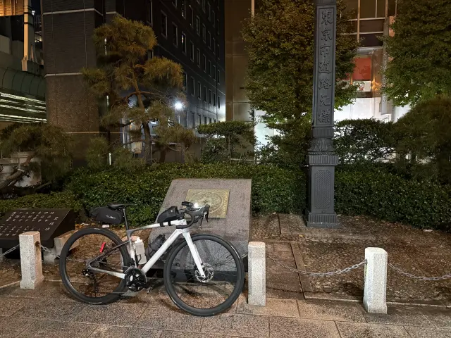
土曜日の深夜、ということでタクシーの多い東京の都心部を走っていたのだが、家を出る前にコーヒーを1杯飲んだのが悪かったのか、やけに心拍数が上がって調子が悪い。
1時間走って東京都を出て神奈川県に入る。
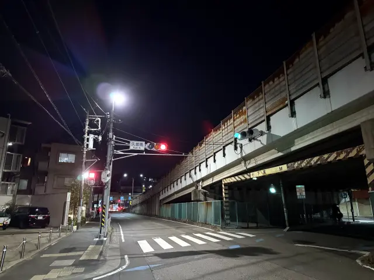
体調の悪さに耐えつつも、弱い追い風に乗って走り自体は順調に進む。
前回は3時間おきに7回の休憩を行ったが、今回は4時間おきに5回の休憩にしようと目論んでいた。
しかし体調が悪く尿意を催したこともあり、3時間少し経過したところで秦野のコンビニにピットイン。
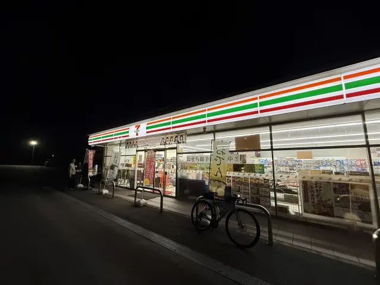
ここから明け方にかけて気温が下がるので長袖のウインドブレーカーを羽織って再出発。
松田から御殿場までは予報通り向かい風だったが、斜度はそれほどでもなく、また夜間のR246は交通量も少なく走りやすかった。
ただ気温は想定以上に下がり、予報だと最低気温は13℃くらいだと思っていたが、Garminの実測で9℃まで下がり、体力を結構消耗してしまった。
御殿場で登りきった後は沼津まで信号に引っかかることもほぼなく快調に下った。
沼津で日本橋以来となる国道1号に出て、ようやく空が明るくなってきた。
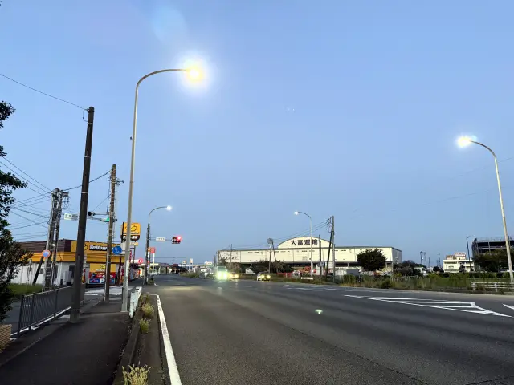
しばらく国道1号沼津バイパスを進んだ後、東田子の浦で県道380号へ。
尿意が続いており我慢しながら走っていたところコンビニを見つけたので6時丁度に2回目の休憩。
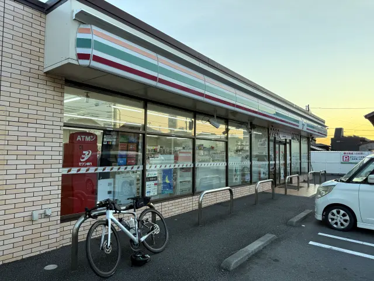
2回目の休憩の後は出発前に飲んだコーヒーのカフェインが抜けてきたのか、それとも気温が上がってきたためか、体調は回復傾向に。
少し景色を見る余裕も出てきて、富士川を渡るときは振り返って富士山をバックに記念撮影。
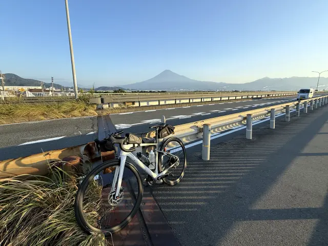
由比付近では反射ベストを来たサイクリスト数名とすれ違ったが、おそらくR東京の行ってこいシリーズの参加者だったと思われる。
清水、静岡の市街地では信号に引っかかり若干ペースダウンしたが貯金は維持しつつ進行。
宇津ノ谷トンネルは歩道で通過。
藤枝〜島田は信号のつながりがよく、結構稼ぐことができた。
今回もドリンクボトルは2本で挑んだが、気温が一気に上がってきて3時間経過した時点で飲み切ってしまったので、島田のコンビニで3回目の休憩。
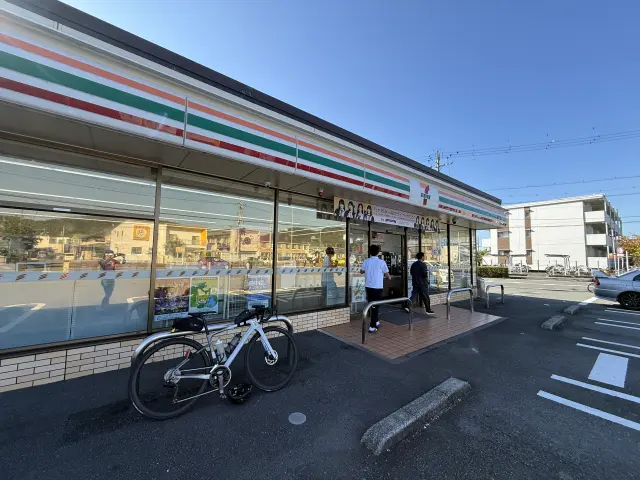
再出発後は気合を入れて金谷峠をクリアし、掛川を順調に走っていると、前方に反射ベストを来てカメラを構えている人が。
なんとshelliemayさんが迎撃に来てくださった。
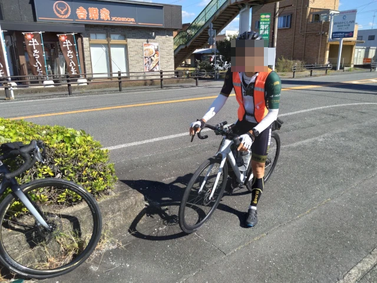
shelliemayさん撮影
ここまで走っている途中は「今回は途中でリタイアしてしまうかも」と思っていたけれど、直接「頑張って」と声をかけていただいたことで気合いが入り、「最低でもゴールする」と決心。
掛川と袋井の市境付近で少しだけ袋井バイパスを走るものの、すぐに1本北の道に。信号も少なくここの道は正解のような気がする。
50mほどの標高差がある台地を2回ほど登ったのち、浜松市街地の北側を通って姫街道側へ。
ここではなんとウルトラロングディスタンスの第一人者のなるさんが奥さんとともに迎撃してくださった。
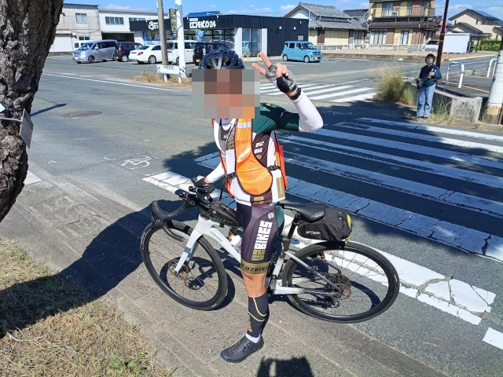
なるさん撮影
順調かどうか尋ねられたので「現時点では20分ほど貯金があるけど、最後までこのペースが持つかは自信がない。間に合うかギリギリのエンターテインメントをお届けできるかも。」という趣旨で回答。
その後、そのなるさんが練習時によく写真を上げているオハハマナコスポットで記念撮影。
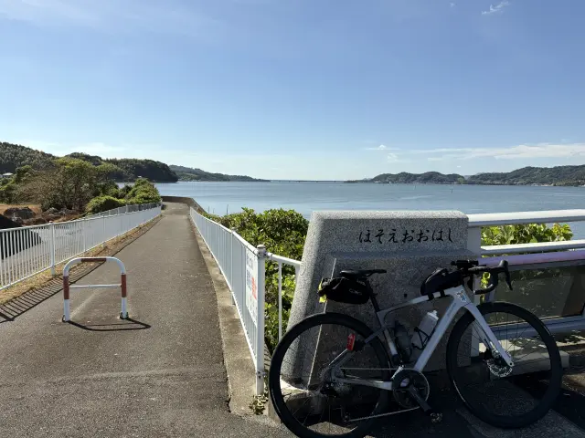
その直後のコンビニで休憩したところ、さらにpiroさんからも迎撃が。ありがたい限り。
ルートがわからず、天竜川から追いかけ気賀のファミマで休憩されてるとこでやっと迎撃。後半もお気をつけて‼️ pic.twitter.com/FLGkxkegCE
— piro (@pirochanroad) October 18, 2026
ちょうど半分経過したところだったので貯金が減ることを承知の上で少し長めに休憩。さらにpiroさんと会話することで精神的にもリフレッシュできた。
朝は寒かったものの日差しによって気温はぐんぐん上がり、おそらく25℃以上、体感的には30℃以上でとても暑かったのでウェアを1枚脱いで対応。
しばらく浜名湖の湖畔をぐねぐね走った後、本坂トンネルを通過。ここの標高は140mほどで意外と低い。
豊川市街地は若干信号のつながりが悪く走りにくかったが、国府駅で国道1号に復帰。
本宿駅付近まで意外と上りがあるが、追い風のおかげであまり踏まずにクリア。
岡崎付近からは徐々に交通量が多くなって信号に引っかかる回数も増えてきて、貯金は5〜10分程度のまま推移。
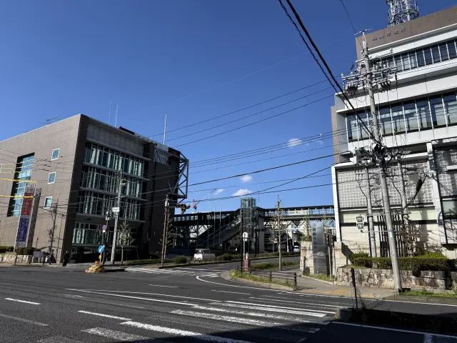
刈谷市に入ったところで5回目の休憩。
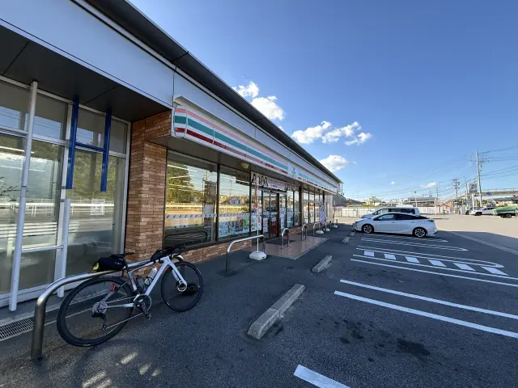
休憩に加えて名古屋に近づくに連れて信号も増え、一旦貯金がほぼなくなることを覚悟しつつも、朝方悪かった体調はほぼ回復して少なくとも完走はできる見通しに。
R23の歩道を渡ろうとしたところ、下り方面は工事中との看板を発見。幸い逆側の歩道は通行できた。
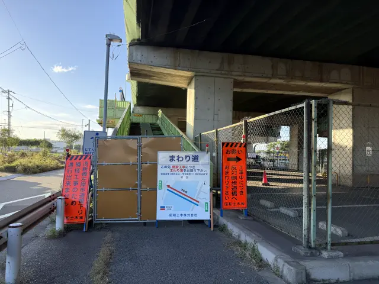
R23は相変わらず交通量が多いものの、そのおかげで自動車が風を作ってくれるので若干横風気味になってきたものの速度としては順調に。
ただし橋などでは進まなくてやきもきする場面も。
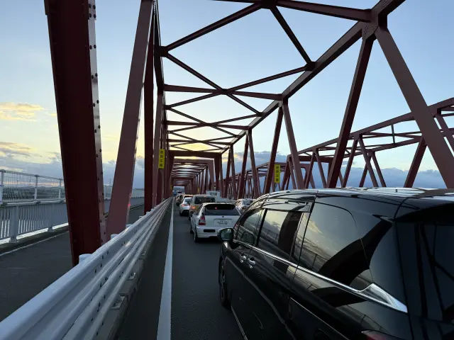
三重県に入ってからは進路が南西向きなのでほぼ横風に。
四日市市街地の手前でR23からR1に移るルートを取っていたが、R1の四日市市街地区間が夕方のラッシュに重なって非常に走りにくかったので、多少距離が伸びても四日市の中心部を通過するまでR23のまま走ったほうが良かったかもしれない。
四日市からは再び進路を西向きに取って追い風に。
残り6時間の時点で残りの距離はちょうど120km。
「加太越えもあるし若干厳しいかも」とXで投稿したがモニグラ〜さんから「信号少ないから大丈夫」との返信があり、それを信じて最後まで諦めずに踏むことに。
関宿のコンビニで最後になるかもしれない休憩をして、一息入れてから加太越えへ。
真っ暗な山道をひたすら耐えて登りきったら、これまでに増して強烈な追い風が。
ほぼノンストップで伊賀上野を通過し、木津まで一気に走ったところ、残り6時間で120kmだったのが、残り4時間で75km、残り3時間で51kmに。
24時間以内の達成が見えてきたので、万が一にも集中力を切らさないように生駒で追加の休憩。結局前回と同じ7回の休憩をすることとなった。
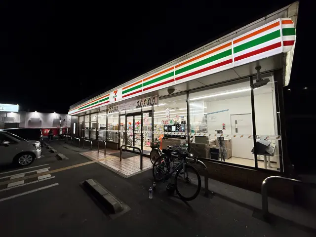
清滝トンネルの歩道への入り方を間違えるトラブルはやってしまったが、なんとかリカバリしてトンネルをくぐると、眼前に大阪の夜景が。
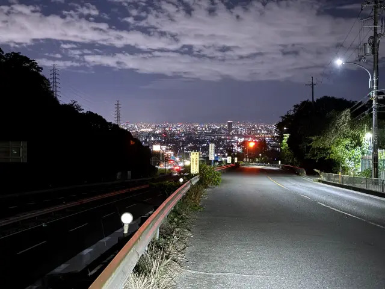
最後は慎重にR163からR1側道を通り、府道8号線であとは梅田までまっすぐ行くだけ。
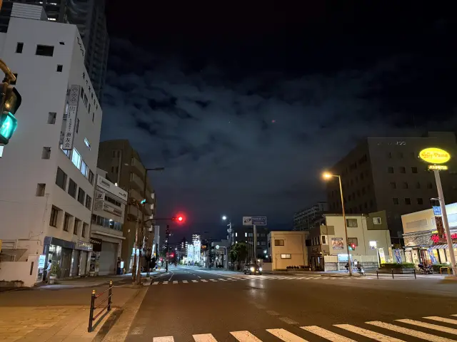
京橋駅付近では酔っ払いが飛び出してきそうで非常に怖かったが、23時28分に梅田の大阪市道路元標に到着！
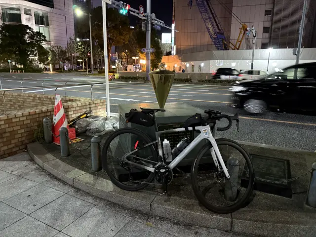 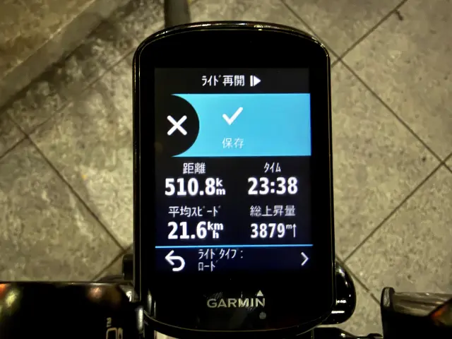
最後もRX01さんが迎撃に来てくださった。
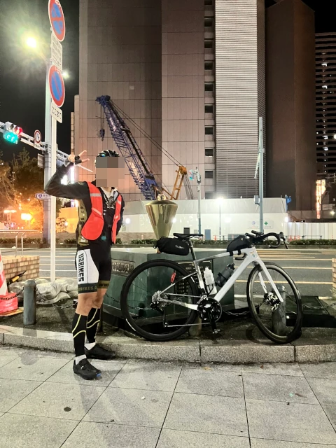
RX01さん撮影
ゴールしたときに一人ぼっちか、誰かにすぐ報告できるかは嬉しさが段違いなので大感謝。
ゴール後
RX01さんと談笑して10分ほどゴールの投稿を忘れていたが、思い出してXに投稿し、23時間38分で達成したことを報告。
新大阪駅までのルートを教えていただいた後、予約していた東横インに宿泊。
洗濯と乾燥をすませると2時を過ぎていたが、頑張って5時半に起床して6時11分のひかりに乗車。
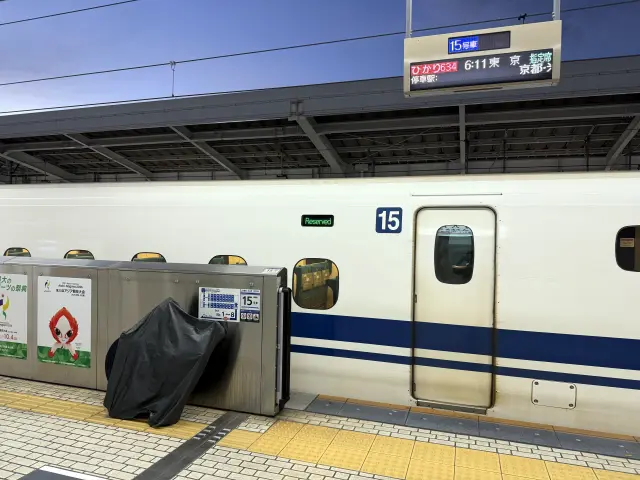
新幹線の中で少し仕事をしつつ、朝ラッシュ帯なので最寄り駅までは乗らず東京駅で輪行を解除して自走で帰宅。
達成したことも嬉しかったが、何より怪我なく無事に帰れてホッとした。
とはいえ自転車を片付けたら急いで出社。仕事から帰ったらさすがにヘトヘトだった。
振り返り
スタート前に設定した目標速度に対する貯金の遷移は下図となった。
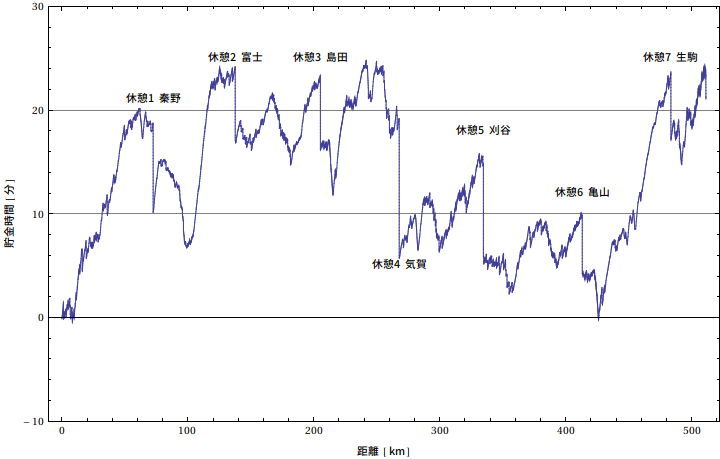
加太越えで一瞬貯金を使い果たしたものの、ほぼ全区間で貯金を一定水準に維持できていたので、目標の設定や実際の走行は概ねうまくできていたと思う。
目標速度を改善するなら、東京と大阪だけでなく名古屋付近も少し平均速度を落とした設定にするともう少し精度が上がって精神的な余裕も増えると考えられるが、途中の区間を22km/hで固定したことで走行中の暗算はやりやすかったので、どちらを取るかは難しい。
また、ルート作成の手間が増えてしまうが、設置するPOIを3時間毎から1時間毎に増やして走行中の暗算を減らしても良かったかもしれない。
走行面では、休憩回数を減らすことは体調と天候面で叶わなかったが、コンビニ休憩1回あたりの時間を前回のOTのときの約15分から半分程度の約7分に短縮できたのは良かった。
なお、今年は特にFTPテストをやっていないので推定値となるが、富士ヒルの試走時に90分間180Wを出したので、標高によるパワー低下も考慮してFTPは200W前後で3.4W/kg程度だろうと思われる。 前回のOT達成時はFTPが215W、PWRが3.7W/kgだったので悲しいが低下していることは否めない。
一方で、前回からの6年間で自転車用ライトの性能が大幅に向上しており、夜間走行時の安心感が格段に向上し、そのおかげで前回のようなパンクも起こらずタイムロスなく完走できた。
まとめると、6年前から脚力は若干落ちてしまっているものの、カーボンバイクによる車体の軽量化やライトの性能向上といった機材や技術の進化の恩恵を受けつつ、コンビニ休憩時間の短縮など前回の反省からの改善もあって何とか達成に漕ぎ着けたのだと思う。